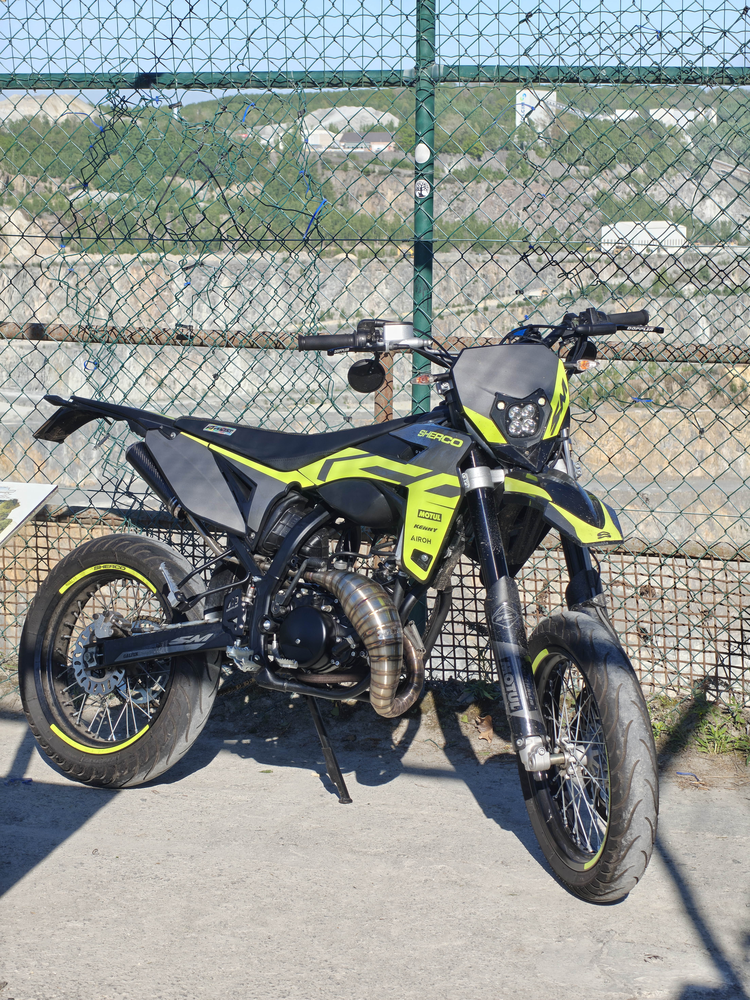

Dit is mijn sherco SM-50 RS met 74cc cillinder, platek 50/70 uitlaat en 21mm Dellorto PHBG carburator
De topsnelheid bedraagd 100 KM/u. De sprint ernaartoe is erg snel voor een bromfiets door performance upgrades die ik heb uitgevoerd.
hier vind je de officiële informatie van de sherco in originele staat.